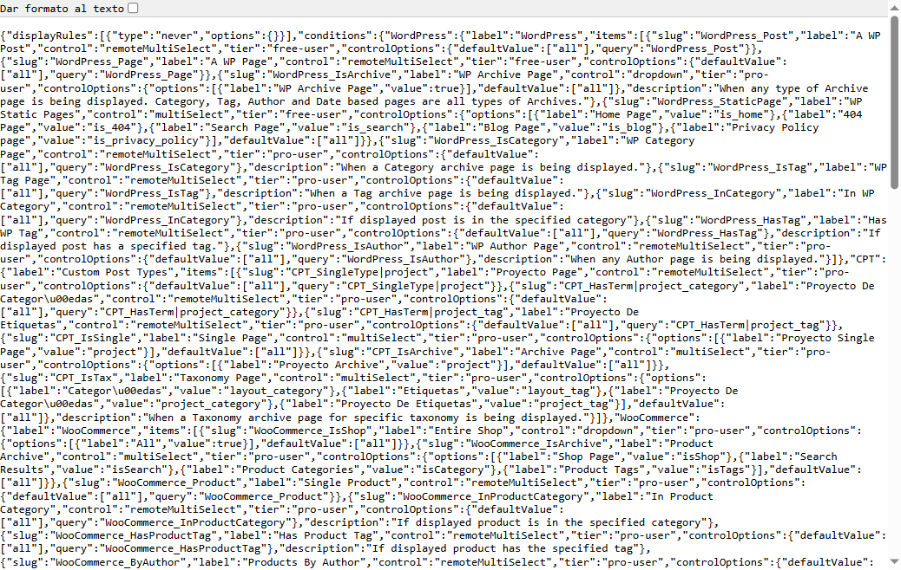
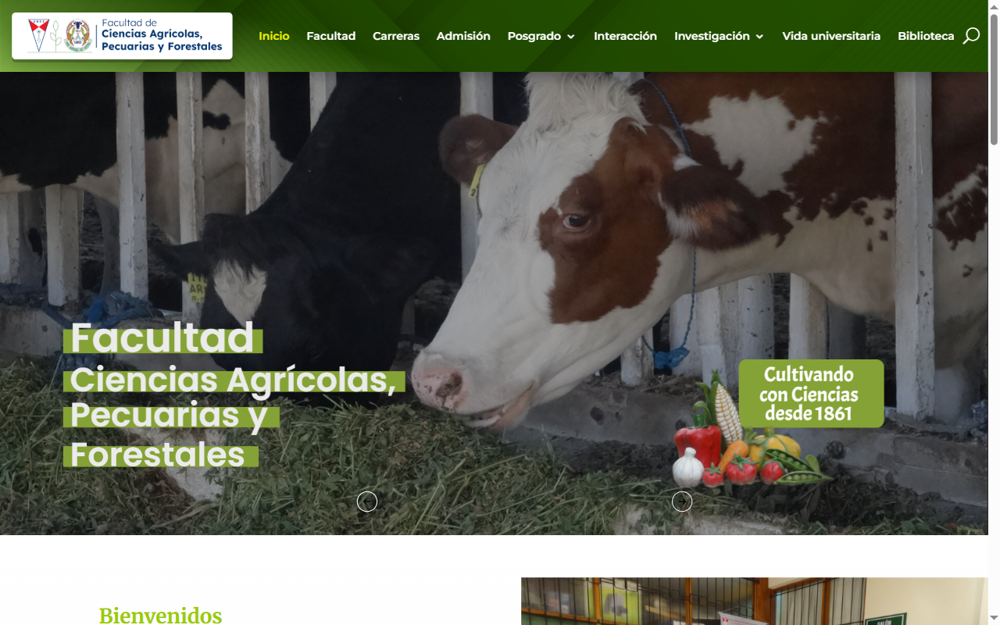

Comparación antes / después — documento Depicter ID 17 (hero slider)
1. Cambio apreciable en la API (integridad confirmada)
El endpoint depicter-document-rules-show refleja la modificación no autenticada. Este es el impacto directo del CVE.
displayRules: [{"type":"always"}]
displayRules: [{"type":"never"}] — escrito sin autenticación2. Homepage — hero slider embebido (sin cambio visual aparente)
El documento 17 está incrustado vía shortcode/Divi. En Depicter 4.0.1 las reglas de visualización modificadas vía AJAX no ocultan el slider inline; el HTML sigue renderizándose igual.
.depicter-17 — regla alwaysnever en servidor (480px altura)Conclusión visual: el impacto demostrable en producción es la alteración persistente de reglas (CWE-862). El efecto en popups/overlays condicionales sería el vector de defacement más visible; el slider embebido de homepage no refleja el cambio en esta versión.
3. Viewport completo (referencia)


never4. Demo en vivo sobre la página (100% visible para monografía)
Tras escanear IDs 1–30 y 27 páginas del sitemap, no existe popup Depicter activo ni regla que oculte el slider embebido. La demo visible usa overlay + panel JSON sobre el hero real.

Script reproducible: poc/depicter-poc-live-on-page.js (consola DevTools en fcapyf.umss.edu.bo).
Incluye botón Revertir a always.